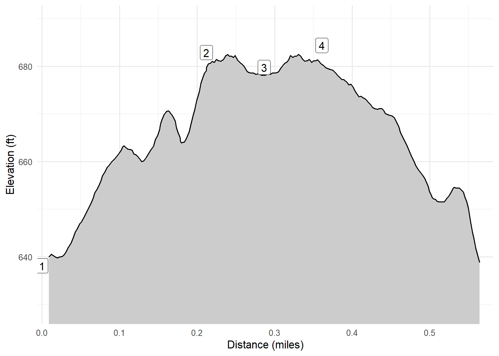

Twin Falls Park Trail
Port Wing, WI
Twin Falls Park is a small town park just west of Port Wing, WI. It has a short trail up to a little falls that can be pretty neat when the water is running.
Walk-Specific Map
Elevation Profile

GPX Download
A sanitized GPX file of our hike is here.
Summary Information
| NUM | trackID | Primary | Description | Distance | CumDist | DeltaElev |
|---|---|---|---|---|---|---|
| 1 | WITWNF01 | Twin Falls Park Tr | Parking area to | 0.21 | 0.21 | 45 |
| 2 | WITWNF03 | Twin Falls Park Tr | Parking area to | 0.07 | 0.29 | -3 |
| 3 | WITWNF03 | Twin Falls Park Tr | to Parking area | 0.07 | 0.36 | 3 |
| 4 | WITWNF02 | Twin Falls Park Tr | Creek above falls to | 0.22 | 0.58 | -46 |